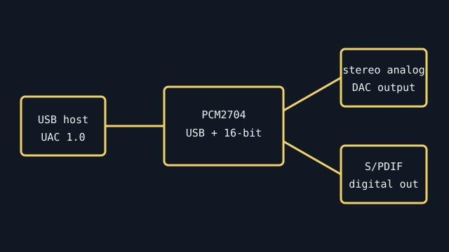

[ SEMICONDUCTOR // USB AUDIO DAC ]
Texas Instruments PCM2704
A single-chip USB 1.1 stereo audio DAC controller that combines USB audio interfacing with digital-to-analog conversion. This is an IC, not a finished USB adapter; board-level connectors and power filtering are design-dependent.

Specifications
| Product ID | Texas Instruments PCM2704 stereo USB audio DAC controller IC; package suffix identifies physical package option. |
|---|---|
| Host interface | Full-speed USB 1.1 device; USB Audio Class 1.0 behavior supports standard USB audio hosts. |
| Conversion | Integrated stereo 16-bit DAC; supported sample rates are 32, 44.1, and 48 kHz. Manufacturer datasheet identifies headphone/line analog outputs and S/PDIF output capability. |
| Connectors / I/O | IC package pins only: USB D+/D−, analog output, digital audio output, clocks, and power. No user-facing connector exists until a board designer implements one. |
| Drivers / OS | USB Audio Class 1.0 standard operation is designed for class-compliant hosts; exact OS enumeration still depends on host audio-stack support. No separate TI-specific driver is stated by the datasheet. |
| Variant compatibility | PCM2704 is distinct from PCM2705/PCM2706/PCM2707 variants with different I/O/control functions. Match suffix and package drawing before board assembly or replacement. |
Service & preservation
Retain the original board schematic and BOM with any PCM2704-based adapter. Observe datasheet decoupling/layout guidance and ESD precautions; diagnose USB enumeration separately from analog output and do not infer a finished product’s output level from the IC datasheet alone.
Primary sources
- Texas Instruments — PCM2704 product pageManufacturer product identification and technical documentation.
- Texas Instruments — PCM2704 datasheet (PDF)Primary source for USB interface, sample rates, conversion, pin functions, and electrical limits.
- USB-IF — USB Audio Device Class 1.0Standard defining class-based audio communication.